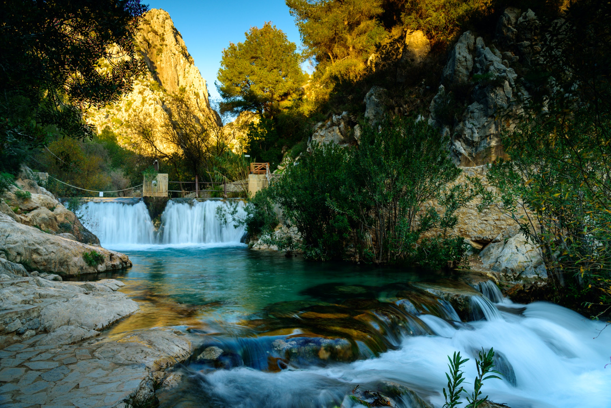
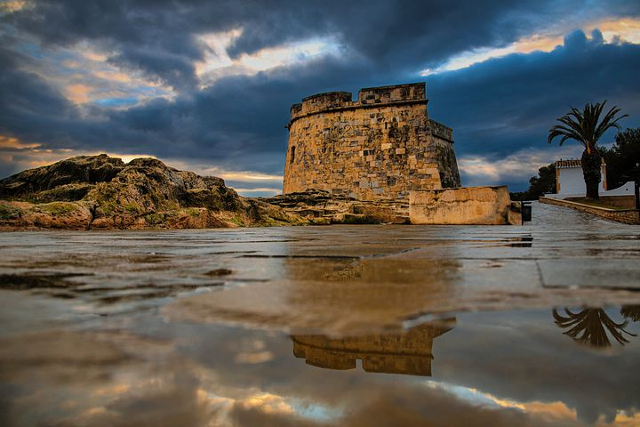
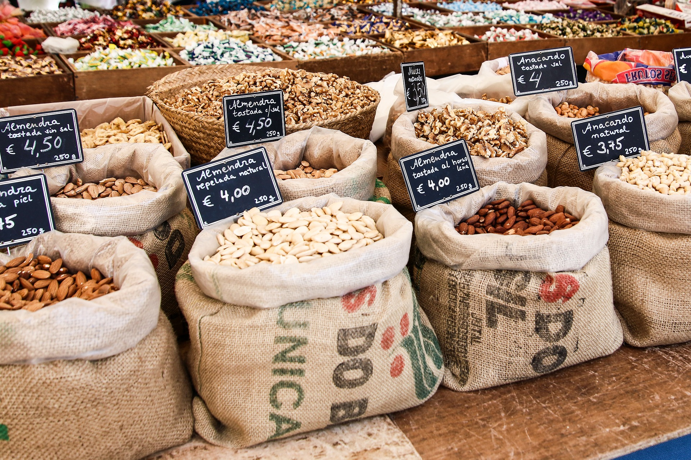
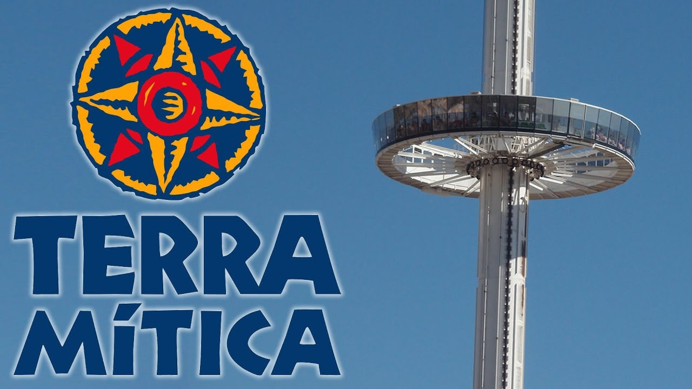
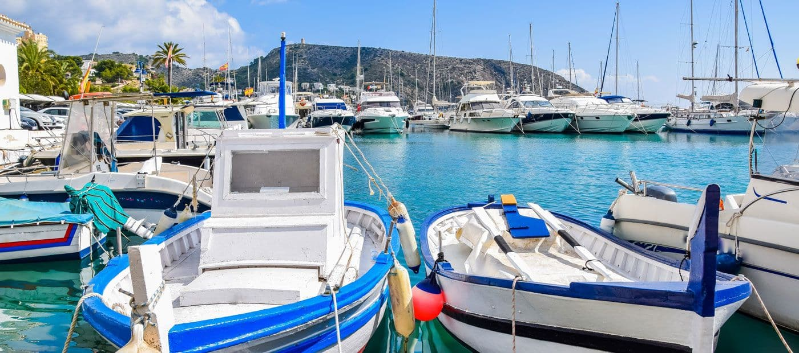
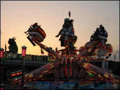
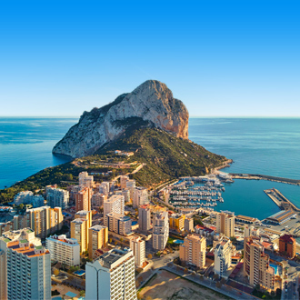
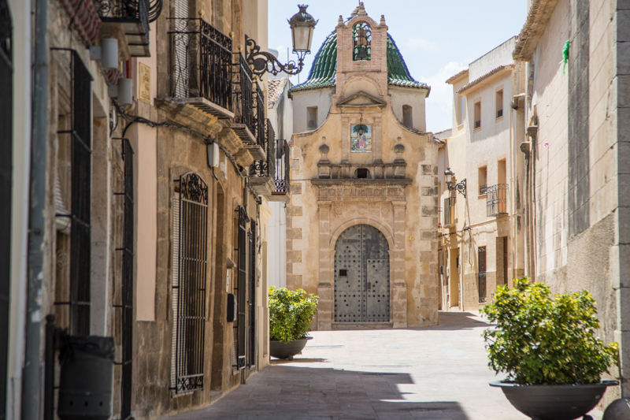

Waterval Algar
Les Fonts d'Algar, gelegen op slechts 15 km van Benidorm en 3 km van het stedelijk centrum van Callosa d'en Sarrià, richting Bolulla, vormt een natuurgebied met een hoge mate van instandhouding van ecologische rijkdom en begiftigd met tegelijkertijd, toeristische diensten en milieueducatie.
Deze ruimte werd uitgeroepen tot natte zone beschermd door de overeenkomst van de Valenciaanse regering van 10 september 2002.
Het bezoek bestaat uit een 1,5 km lang circuit langs het kanaal van de rivier de Algar ("grot" in het Arabisch) om het landschap te zien dat het resultaat is van de kalksteenkarstmodellering: de spectaculaire watervallen; de talrijke bronnen die uit de rots ontspringen; de "tolls" (poelen van water) waar u verfrissende baden kunt nemen met zuiver en kristalhelder water, vroeger beschouwd als een "bron van gezondheid"; de oude dam, het imposante kanaal en de eeuwenoude sloten die nog steeds in gebruik zijn.
De diensten die gericht zijn op het vergemakkelijken en verrijken van het bezoek met middelen voor milieueducatie zijn de volgende: VVV-kantoor, parkeerplaatsen, toiletten, eerste hulp, het Arboretum, de picknickplaats en de 2e categorie camping.
Aan dit alles moeten we het Dino Park Algar toevoegen, evenals de 5 restaurants die in de directe omgeving bestaan, waar u kunt genieten van de typische gastronomie van het gebied.

Castillo de Moraira
Moraira Kasteel gebouwd in de jaren s. XVIII met defensieve en bewakingsdoeleinden, domineert het het strand van l'Ampolla.
Het heeft een karakteristieke "ossenhoef" plattegrond, met een halfronde gevel op het zuiden en een enkele deur aan de noordzijde, waarboven het wapen van Bourbon (met de datum van voltooiing, 1742), waar het werd geopend in het verleden door een gracht en een ophaalbrug over te steken zodra de beschermende tangen waren gepasseerd.
De schuine wanden hebben een afmeting van 10 m. hoog en zijn gemaakt van metselwerk, bedekt met ruwe stenen ashlars, die afkomstig zijn van de fossiele duinen die er waren. Het dak wordt beschermd door een muurtje met zeven openingen, in de vorm van een pijlspleet, waar de kanonnen zich bevonden.
Dikke muren verdelen het interieur in een middenschip en twee kleinere zijbeuken van in totaal 200 m2. De verlichting van deze ruimte wordt bereikt door drie kleine ramen die openen naar het zuiden en een vierde boven de toegangsdeur.
Andere constructies die getuigen van het leven rond het fort zijn een kleine hermitage voor de toegangsdeur en een kleine cisterne, die enkele meters naar het oosten ligt, uit dezelfde periode en die werd gebruikt om water op te slaan voor consumptie. van uw schenking.

Markt
Is het niet geweldig om over de markt te lopen en alles te bekijken wat voor moois er bij de marktkramen ligt? Elke vrijdag kun je je uitleven op de veel bezochte markt van Moraira.
Wij zijn in ieder geval dol op deze markt, want je kunt hier echt winkelen! Tassen, kleding, sieraden, schoenen en nog veel meer. Ja, er zijn zelfs echte lederen items, waaronder portemonnees, aktetassen, portefeuilles en riemen!
Daarnaast zijn er een aantal groenten en fruit stands. Zoals we weten, deze markt is zeer popular. Het daarom ook een aanrader om vroeg in de ochtend naar de markt te gaan, zodat je de drukte en de warme zon vermijd (vooral tijdens het hoogseizoen).

Uitkijk toren Moraira
De uitkijktoren van Moraira is één van de meest bekende bezienswaardigheden van Moraira. Het is dan ook een absolute must om de uitkijktoren te beklimmen.
Maak een mooie wandeling langs het prachtige strand Playa del Portet en geniet van de omgeving. Volg de straten richting Cap d'Or, om vervolgens naar het hoogste punt te klimmen, waar de prachtige oude uitkijktoren van Moraira, Torre de Vigia, staat.
Torre de Vigia heeft een interessante geschiedenis achter de rug. En dat is niet heel vreemd, want de oude uitkijktoren staat hier al sinds 1553.
De uitkijktoren van Moraira is een echte aanrader. Met je bezoek wordt je in ieder geval een geweldig mooie ervaring rijker!

Terra Mitica
Ga je op vakantie met je kinderen of ben je een liefhebber van pretparken? Dan is Terra Mitica bij uitstek de plek om een dag door te brengen! Want, wat is er niet heerlijker dan een leuke dag in een pretpark?
Net buiten Moraira vind je het pretpark Terra Mitica. Het is één van de meest unieke parken die je ooit zult bezoeken.
In het pretpark dwaal je door de geschiedenis en culturen van Egypte, Rome, Griekenland, Iberia en Las Islas. Het net alsof je in één dag meerdere landen bezoekt!
Stap in de snelle houten achtbaan of laat je nat spetteren in de wildwaterbaan. Wees niet bang en ga voor een dagje waarbij de adrenaline door je lichaam gutst. Het is een leuk dagje uit voor jong en oud(er)!

Haven van Moraira
Is het niet heerlijk om aan de kust te wandelen, met een verfrissend zeebriesje en het getjirp van volgens om je heen? Daarom staat de haven van Moraira met stip op nummer 6 van onze TOP 10.
De moderne haven van Moraira is één van de grootste van zijn soort aan de Costa Blanca. Je kunt hier dan ook een mooie wandeling maken.
Het is beschut tussen de rotsen van Cap Blanc en Punta de Moraira. Neem een kijkje in de keuken van de haven van Moraira en bewonder ondertussen de vissersboten en de gigantische aangemeerde jachten.
Laat je fantasie gaan en droom lekker weg. Even waan je jezelf in de wereld van roem, pracht en praal, terwijl je geniet van een smaakvol gerecht bij één van de restaurants in de haven.

Kermis
Het is niet altijd even makkelijk om met de hele familie naar een groot pretpark te gaan.
Maak je geen zorgen, want er is een super kermis als alternatief om de kids alsnog gelukkig te maken. Neem de kids mee naar de kermis van Moraira.
De kermis bevindt zich achter het winkelcentrum Crystal Mars. Het is een leuke plek om een goede tijd door te brengen met je familie en de kleintjes.
Je zult genieten hoe de kids zich vermaken in de botsauto's, de draaimolen of hoe ze springen op de trampolines. Ze zullen een dagje op de kermis echt waarderen!

Met de auto naar Calpe
Heb je zin om te zien wat voor moois er buitenMoraira is? Maak een dan een tripje met de auto. Open het dak van de auto, zet de muziek aan en gooi de picknickmand op de achterbank.
Het is tijd om de weg te verkennen buiten Moraira! Rij van Moraira langs de kustweg naar Calpe via Benissa. Vertrouw ons, want dit is echt één van de mooiste routes aan de Costa Blanca.
Je krijgt de verschillende kanten van de kust te zien, van prachtige uitzichten over de Middellandse Zee, steile rotsen, kliffen en idyllische baaien tot dennenbossen.
Als je na ongeveer 14km in Calpe bent aangekomen, is het zeker de moeite waard om de tijd te nemen hier.
Wij raden je ook aan stevige wandelschoenen mee te nemen, want een klim naar de Rots van Calpe is iets wat je niet mag missen tijdens je bezoek.

Teulada
Wil je een charmante Spaanse stad bezoeken? Op slechts 6 kilometer landinwaarts van Moraira kom je met de auto in de historische stad Teulada.
Volg de smalle straatjes in het centrum en ontdek de Moorsegeschiedenis van Teulada.
En als je hier toch bent, is het proeven van de beroemde Muscato wijn van Teulada zeker niet uitgesloten.
Voor winkelliefhebbers hebben we speciaal een tip! Kom in ieder geval op woensdagochtend naar Teulada.
In de ochtend is er een kleine markt in de straten van deze oude stad.
